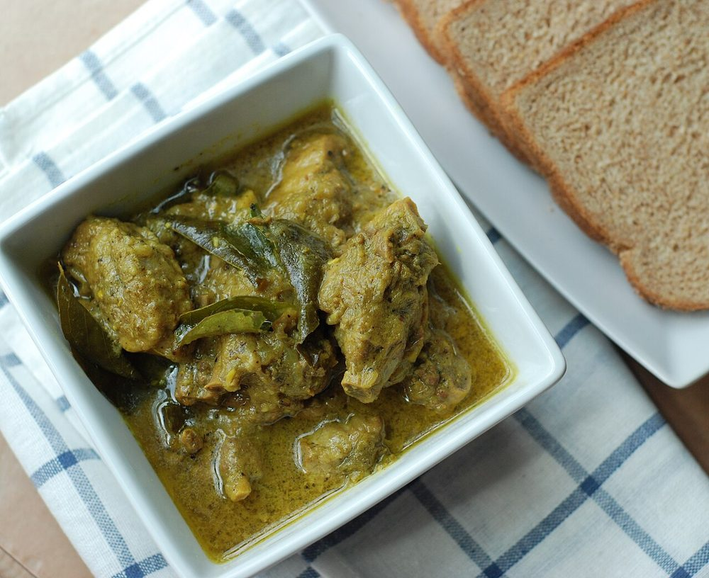

Allergens: none of the ten listed below
Ingredients
Quantities for 6.
- 1.2kg, jointed into 8-10 pieces, excess fat trimmed Ducka whole duck jointed, skin left on
- 400ml thick, plus 400ml thin Coconut Milk
- 200g, sliced Shallot
- 1 large, sliced Onion
- 4cm piece, julienned Ginger
- 10 cloves, sliced Garlic
- 4, slit Green Chilli
- 3 medium, peeled and quartered Potato
- 2 tbsp Coriander Powder
- 1 tsp Turmeric
- 2 tsp, coarsely ground Black Pepper
- 1 tsp Fennel Powder
- 1 tsp Garam Masala
- 1 x 5cm stick Cinnamon
- 5 Cloves
- 4, bruised Cardamom
- 1 Star Aniseoptional
- 1 tbsp Vinegarcuts the richness of the duck
- 3 sprigs Curry Leaves
- 2 tbsp Coconut Oil
- 300ml Water
- 2 tsp, or to taste Salt
Cookware
stovetop, pressure cooker
Checked against the ingredient list for ten allergens: milk, egg, fish, crustaceans, tree nuts, peanuts, sesame, mustard, soy and gluten. Brands vary, so read the label on anything new to you.
Before you start
- Marinate the duck with the turmeric, 1 tsp black pepper, the vinegar and 1 tsp salt for at least 1 hour, or overnight in the fridge.
- Trim the loose fat pads from the cavity end. Duck renders a great deal of fat and mappas should not be greasy.
- Separate the thick and thin coconut milk into two jugs; they are added at different stages.
- Bring the marinated duck to room temperature 30 minutes before cooking.
Method
- Heat the coconut oil in a heavy pan and brown the duck pieces skin-side down over medium heat for 6-8 minutes until the skin is golden and a pool of fat has rendered out, then lift the pieces aside.Start the duck in a barely warm pan and let the fat render slowly. Rushing gives you burnt skin and untouched fat.
- Pour off all but 2 tbsp of the rendered fat and keep it. It is the best cooking fat in the kitchen.
- Fry the cinnamon, cloves, cardamom and star anise in the reserved fat for 30 seconds until they perfume the pan.
- Add the shallots and onion and cook over medium heat 12-14 minutes until soft and pale gold, not brown.Mappas wants sweetness from the onions, not colour. Keep the heat moderate and stir often.
- Add the ginger, garlic and green chillies and cook 3 minutes.
- Stir in the coriander powder, remaining black pepper and fennel powder and fry 1 minute with a splash of water so nothing catches.
- Return the duck with 2 sprigs of curry leaves, the thin coconut milk, 300ml water and the salt.
- Cover and simmer very gently for 50-60 minutes, turning the pieces twice, until a skewer slides into the thigh without resistance.Duck needs long, low cooking. A hard boil tightens it and no amount of extra time will soften it again.
- Add the potatoes and cook a further 15 minutes uncovered until tender and the gravy has reduced by about a third.
- Turn the heat to its lowest, pour in the thick coconut milk and the garam masala, and swirl the pan.
- Heat through 3-4 minutes without letting it boil, until the gravy is glossy and coats the duck.If bubbles start breaking the surface, pull the pan off the heat immediately. Thick coconut milk splits at a boil.
- Finish with the last sprig of curry leaves, rest 10 minutes covered, and serve with appam or vellayappam.
Safe temperatures: Chicken and duck are done at 74°C / 165°F, taken at the thickest part and clear of the bone. Reheat leftovers to 74°C / 165°F. FoodSafety.gov
Storage
Keeps 3 days refrigerated and tastes better on day two. Reheat over the lowest possible heat, stirring, and never allow it to boil. Freezing is not recommended.
Nutrition Medium estimate
High protein: 42 g a serving, 30% of the calories
| Per serving471 g | Per 100 g | |
|---|---|---|
| Calories | 565 kcal | 121 kcal |
| Protein | 41.8 g | 9 g |
| Carbohydrate | 31.5 g | 7 g |
| of which sugars | 4.6 g | 1 g |
| Fibre | 5.2 g | 1 g |
| Fat | 31.3 g | 7 g |
| of which saturated | 21.1 g | 4 g |
| of which unsaturated | 6.2 g | 1 g |
Ingredients given to taste count as zero, so the real figures run a little higher. Nearest database match used for curry leaves, garam masala. Estimated from raw ingredients using USDA FoodData Central.
More like this: Gluten-free Indian recipes · Dairy-free Indian recipes · Kerala recipes
Times, yields, allergens and nutrition are guidance. Use your own judgement on doneness and on storing. More in About.